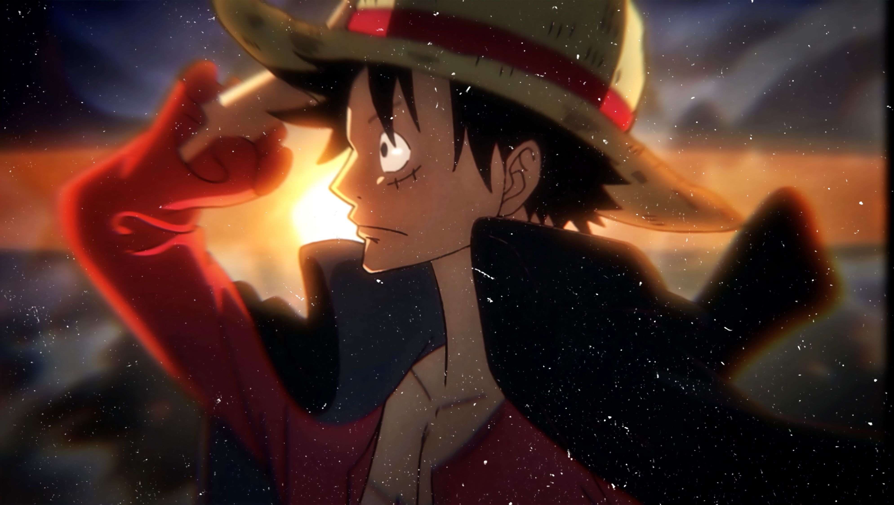
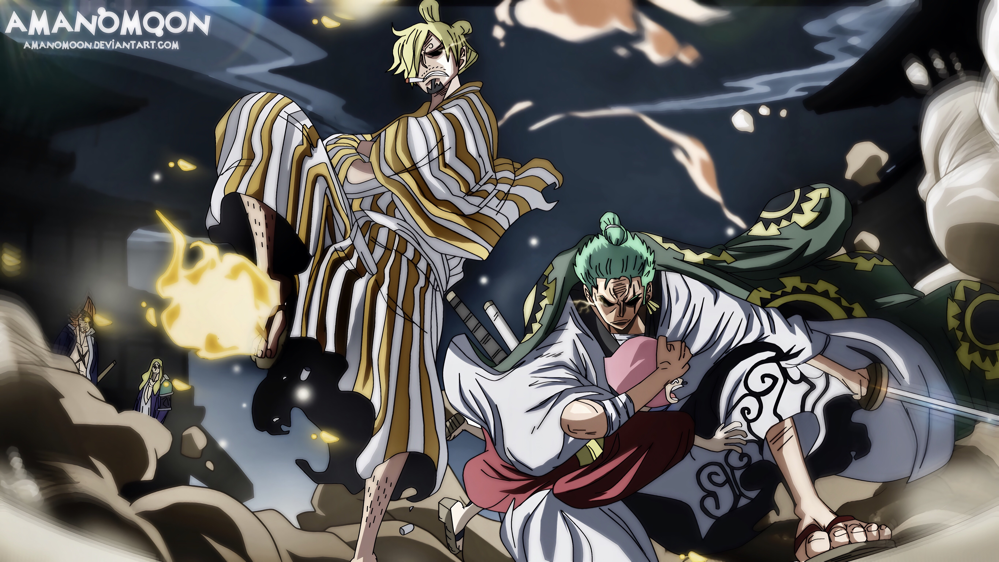

Monkey D Luffy
"Monkey D. Luffy, the buoyant and fearless captain of the Straw Hat Pirates in the renowned anime and manga series "One Piece," possesses the extraordinary ability to stretch his body like rubber due to consuming the Gomu Gomu no Mi Devil Fruit. With an unwavering dream of becoming the Pirate King and uncovering the fabled "One Piece" treasure, Luffy leads his diverse crew on a grand adventure across the perilous Grand Line. His infectious optimism, disdain for oppression, and unbreakable trust in his comrades make him a charismatic and endearing figure. Fueled by his signature attack, the "Gum-Gum Pistol," Luffy's journey is marked by legendary encounters, unbreakable bonds, and a resolute determination to challenge the world's most formidable adversaries, showcasing the essence of camaraderie, courage, and the pursuit of dreams that define the heart of One Piece."
Zoro and Sanji
Roronoa Zoro, known as the "Pirate Hunter," is the unwavering swordsman of the Straw Hat Pirates, wielding three swords in his relentless pursuit of becoming the world's greatest swordsman. With a stoic demeanor and unyielding dedication to his captain, Monkey D. Luffy, Zoro's loyalty is matched only by his formidable combat skills. In contrast, Vinsmoke Sanji, the crew's adept chef, showcases a suave and chivalrous demeanor, relying on his "Black Leg Style" of combat, which emphasizes powerful kicks. Despite their frequent banter and humorous clashes, Sanji's loyalty to the crew is unwavering. Born into the notorious Vinsmoke family, he rejected his royal heritage in favor of his culinary passion, aspiring to discover the mythical All Blue, a sea with fish from around the world, to elevate his culinary expertise. Together, Zoro and Sanji add layers of strength, loyalty, and unique skills to the Straw Hat crew as they navigate the treacherous waters of the Grand Line, embodying the essence of camaraderie and individual pursuit in the world of "One Piece."